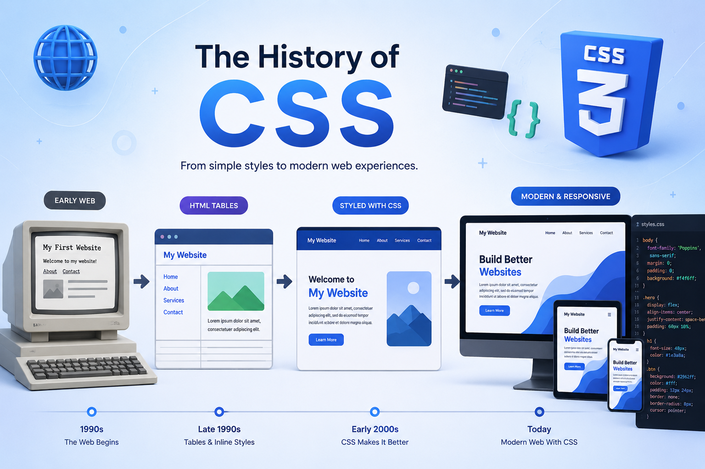
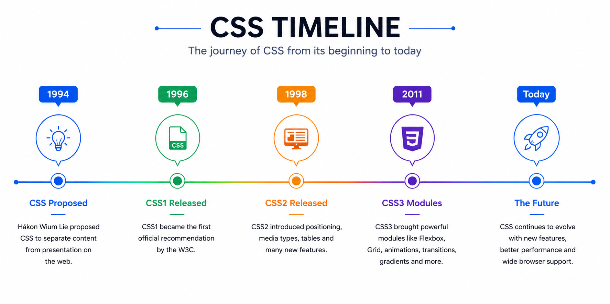

In the early days of the web, HTML was used for both content and
design. Developers used HTML tags to change fonts, colors, and
layouts.
This made webpages difficult to maintain and update. The need for a
separate styling language led to the creation of CSS.
The history of Cascading Style Sheets (CSS) began in 1994 when Håkon Wium Lie proposed a way to separate a webpage's content from its visual design. Before CSS, HTML was used for both structuring and formatting webpages, making websites difficult to maintain and update. To solve this problem, CSS was introduced as a dedicated styling language. The first official version, CSS1, became a recommendation in 1996, followed by CSS2 in 1998, which added features like positioning and media support. Over time, CSS3 introduced powerful modules such as Flexbox, Grid, animations, transitions, gradients, and responsive design techniques. Today, CSS continues to evolve under the guidance of the World Wide Web Consortium (W3C) and remains one of the core technologies used to build modern, responsive, and visually appealing websites. Modern browsers regularly adopt new CSS features, allowing developers to create faster, more interactive, and accessible user experiences. As web technologies continue to advance, CSS plays a vital role in shaping the appearance and usability of websites across desktops, tablets, and mobile devices.
